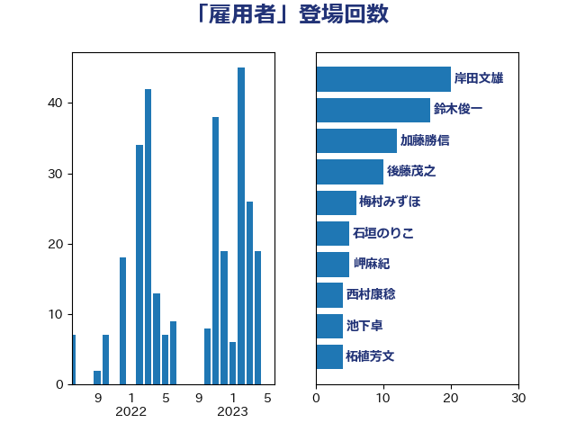

単語「雇用者」

| 岸田文雄 | 自由民主党 | 20 回 |
| 鈴木俊一 | 自由民主党 | 17 回 |
| 加藤勝信 | 自由民主党 | 12 回 |
| 後藤茂之 | 自由民主党 | 10 回 |
| 梅村みずほ | 日本維新の会 | 6 回 |
| 石垣のりこ | 立憲民主党 | 5 回 |
| 岬麻紀 | 日本維新の会 | 5 回 |
| 西村康稔 | 自由民主党 | 4 回 |
| 池下卓 | 日本維新の会 | 4 回 |
| 柘植芳文 | 自由民主党 | 4 回 |
| 岡本三成 | 公明党 | 4 回 |
| 山際大志郎 | 自由民主党 | 4 回 |
| 大塚耕平 | 国民民主党 | 4 回 |
| 城井崇 | 立憲民主党 | 4 回 |
| 仁木博文 | 無所属 | 4 回 |
| 階猛 | 立憲民主党 | 3 回 |
| 萩生田光一 | 自由民主党 | 3 回 |
| 礒崎哲史 | 国民民主党 | 3 回 |
| 田村まみ | 国民民主党 | 3 回 |
| 深澤陽一 | 自由民主党 | 3 回 |
| 宮本徹 | 日本共産党 | 3 回 |
| 宮崎勝 | 公明党 | 3 回 |
| 仁比聡平 | 日本共産党 | 3 回 |
| 高木かおり | 日本維新の会 | 2 回 |
| 金村龍那 | 日本維新の会 | 2 回 |
| 野田聖子 | 自由民主党 | 2 回 |
| 赤羽一嘉 | 公明党 | 2 回 |
| 角田秀穂 | 公明党 | 2 回 |
| 西銘恒三郎 | 自由民主党 | 2 回 |
| 西村智奈美 | 立憲民主党 | 2 回 |
| 盛山正仁 | 自由民主党 | 2 回 |
| 田村貴昭 | 日本共産党 | 2 回 |
| 柴愼一 | 立憲民主党 | 2 回 |
| 広瀬めぐみ | 自由民主党 | 2 回 |
| 前原誠司 | 国民民主党 | 2 回 |
| 高木陽介 | 公明党 | 1 回 |
| 高木宏壽 | 自由民主党 | 1 回 |
| 高市早苗 | 自由民主党 | 1 回 |
| 馬淵澄夫 | 立憲民主党 | 1 回 |
| 須藤元気 | 無所属 | 1 回 |
| 音喜多駿 | 日本維新の会 | 1 回 |
| 阿部司 | 日本維新の会 | 1 回 |
| 門山宏哲 | 自由民主党 | 1 回 |
| 鈴木隼人 | 自由民主党 | 1 回 |
| 鈴木義弘 | 国民民主党 | 1 回 |
| 金子恭之 | 自由民主党 | 1 回 |
| 谷公一 | 自由民主党 | 1 回 |
| 藤巻健太 | 日本維新の会 | 1 回 |
| 菅義偉 | 自由民主党 | 1 回 |
| 舟山康江 | 国民民主党 | 1 回 |
| 紙智子 | 日本共産党 | 1 回 |
| 石井苗子 | 日本維新の会 | 1 回 |
| 石井正弘 | 自由民主党 | 1 回 |
| 田村智子 | 日本共産党 | 1 回 |
| 片山さつき | 自由民主党 | 1 回 |
| 渡辺博道 | 自由民主党 | 1 回 |
| 清水貴之 | 日本維新の会 | 1 回 |
| 沢田良 | 日本維新の会 | 1 回 |
| 櫛渕万里 | れいわ新選組 | 1 回 |
| 柴田巧 | 日本維新の会 | 1 回 |
| 柳ヶ瀬裕文 | 日本維新の会 | 1 回 |
| 松沢成文 | 日本維新の会 | 1 回 |
| 東国幹 | 自由民主党 | 1 回 |
| 村田享子 | 立憲民主党 | 1 回 |
| 杉久武 | 公明党 | 1 回 |
| 早稲田ゆき | 立憲民主党 | 1 回 |
| 岩谷良平 | 日本維新の会 | 1 回 |
| 岡田直樹 | 自由民主党 | 1 回 |
| 國場幸之助 | 自由民主党 | 1 回 |
| 嘉田由紀子 | 無所属 | 1 回 |
| 吉田統彦 | 立憲民主党 | 1 回 |
| 佐藤英道 | 公明党 | 1 回 |
| 伊藤岳 | 日本共産党 | 1 回 |
| 伊藤孝恵 | 国民民主党 | 1 回 |
| 中田宏 | 自由民主党 | 1 回 |
| 中川正春 | 立憲民主党 | 1 回 |
| 中司宏 | 日本維新の会 | 1 回 |
| 三上えり | 立憲民主党 | 1 回 |